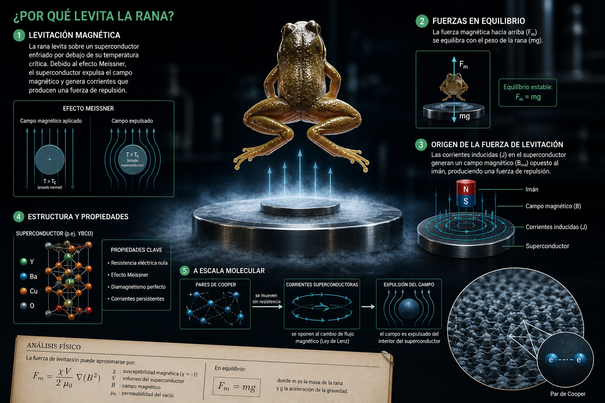

Cómo un experimento absurdo con un sapo levitando terminó inspirando la exploración lunar
El experimento que hizo historia
En el año 2000, el físico ruso-holandés Andréy Gueim —investigador de la Universidad de Nimega, en Países Bajos— y el físico británico Michael Berry, de la Universidad de Bristol, recibieron el Premio IG Nobel de Física por un experimento que parecía salido de un truco de magia: hicieron levitar una rana viva usando un poderoso campo magnético.
El experimento utilizaba un electroimán capaz de generar un campo de 16 teslas, una intensidad equivalente a 320.000 veces el campo magnético terrestre. Para ponerlo en perspectiva: el campo magnético de la Tierra es de apenas 0,00005 teslas. Un imán de heladera ronda los 0,01 teslas. Una máquina de resonancia magnética hospitalaria, unos 3 teslas.
La rana —una pequeña rana de bosque— no sufrió daño alguno. Flotó pacíficamente en el centro del campo magnético, girando lentamente, completamente ajena al hecho de que estaba desafiando la gravedad. El video del experimento dio la vuelta al mundo y se convirtió en uno de los más icónicos de la historia de la ciencia.
El IG Nobel es un premio que se otorga a investigaciones que "primero hacen reír, y luego hacen pensar". Nadie imaginaba entonces que ese experimento aparentemente ridículo iba a abrir la puerta a aplicaciones sorprendentes en la exploración espacial.
¿Cómo funciona? El diamagnetismo
Para entender cómo una rana puede flotar sin trucos, hay que conocer una propiedad de la materia que suele pasarse por alto: el diamagnetismo.
Todos los materiales son diamagnéticos en cierto grado. Esto significa que, cuando se los coloca en un campo magnético externo, generan un campo magnético opuesto muy débil. En otras palabras: los materiales diamagnéticos son repelidos por los imanes.
La fuerza que actúa sobre un material diamagnético en un campo magnético se describe matemáticamente así:
$$\vec{F} = \nabla(\vec{m} \cdot \vec{B})$$
Donde \(\vec{F}\) es la fuerza magnética, \(\vec{m}\) es el momento magnético inducido en el material, y \(\vec{B}\) es el campo magnético aplicado. El símbolo \(\nabla\) (nabla) indica que la fuerza depende de cómo varía el campo en el espacio —no solo de su intensidad, sino de su gradiente—.
El agua es un material diamagnético. Y la rana, como casi todos los seres vivos, está compuesta en un 70% de agua. Con un campo magnético lo suficientemente intenso y con la forma adecuada (un campo que varíe fuertemente en el espacio), la fuerza de repulsión magnética puede igualar el peso del animal.
De forma más específica, la fuerza sobre un objeto diamagnético de volumen \(V\) y susceptibilidad magnética \(\chi\) se puede expresar como:
$$F_m = \chi \cdot V \cdot \frac{B \cdot \nabla B}{\mu_0}$$
Donde \(\mu_0\) es la permeabilidad magnética del vacío (una constante universal). La conclusión práctica es simple: si el campo magnético es suficientemente fuerte, cualquier cosa puede levitar. No es magia: es física.
"La ciencia no distingue entre preguntas serias y preguntas absurdas. Solo distingue entre buenas y malas respuestas."
Del IG Nobel al Nobel de verdad
Diez años después de hacer levitar una rana, en 2010, Andréy Gueim ganó el Premio Nobel de Física. El motivo no fue el experimento de la rana, sino sus investigaciones pioneras sobre el grafeno, un material bidimensional formado por una sola capa de átomos de carbono.
Junto con su colega Konstantín Novosiólov, Gueim logró aislar grafeno por primera vez usando un método sorprendentemente simple: cinta adhesiva común. Pegaban y despegaban cinta sobre un bloque de grafito hasta obtener capas de un solo átomo de espesor.
Este logro convirtió a Andréy Gueim en la única persona en la historia que ha ganado tanto el Premio IG Nobel como el Premio Nobel. Un recordatorio de que la ciencia a veces avanza por los caminos más inesperados, y que la curiosidad —incluso cuando parece absurda— puede llevar a descubrimientos extraordinarios.
Conexión con el currículum
Este experimento se relaciona con el Eje 2 (Energía) del diseño curricular. Involucra conceptos de magnetismo, fuerzas a distancia, campo magnético terrestre y la interacción entre materia y energía.
Dato curioso
El campo de 16 teslas es tan intenso que arrancaría objetos metálicos de tus bolsillos a metros de distancia. Por seguridad, el experimento se realizó en una sala especial sin ningún objeto ferromagnético.
¿Sabías que...?
Todos los materiales son diamagnéticos. Incluso los humanos podríamos levitar con un campo magnético lo suficientemente fuerte. El desafío técnico es generar campos de esa magnitud de forma segura.
Andre Geim, el científico que hizo levitar una rana con imanes, es la única persona en la historia que ganó tanto el Premio Ig Nobel (en 2000, por la rana) como el Premio Nobel de Física (en 2010, por el descubrimiento del grafeno).
De una rana flotante a la Luna artificial
Lo que empezó como un experimento curioso terminó teniendo consecuencias impensadas. En 2022, científicos chinos construyeron una cámara de simulación de gravedad lunar que utiliza campos magnéticos para reproducir las condiciones de baja gravedad de la superficie de la Luna.
La instalación, desarrollada por la Universidad de Minería y Tecnología de China, usa un campo magnético potente para hacer levitar objetos y simular la gravedad lunar —que es apenas un sexto de la terrestre—. Esto permite probar equipos y materiales destinados a misiones lunares sin necesidad de viajar al espacio.
Los investigadores citaron explícitamente el experimento de Gueim con la rana como una de las inspiraciones para el proyecto. Un experimento que parecía un chiste terminó ayudando a la humanidad a prepararse para explorar otros mundos.
Esta historia es un excelente ejemplo de cómo funciona realmente la ciencia: no como una línea recta de descubrimientos solemnes, sino como una red de curiosidades, errores, risas y hallazgos que se conectan de formas impredecibles.

Representación artística: líneas de campo magnético alrededor de un objeto en levitación diamagnética.